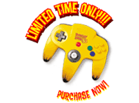
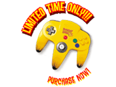
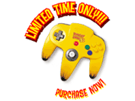

|
 |
|
The vile and despicable K. Rool has ape-napped the Kongs and stolen
Donkey Kong's banana hoard! It's up to DK to rescue his friends, reclaim
the Golden Bananas and save his homeland from certain doom. Controlling
five different Kongs, you'll explore amazingly immense worlds as you
battle Kremlings, solve puzzles and conquer a barrelful of mini-games.
Powerhouse graphics are fueled by the N64 Expansion Pak (included),
producing awesome special effects and explosions to make your eyes pop.
Fun for up to four players*, Donkey Kong 64 is one beast of a game. So stop dragging your knuckles and turn the page—it's time to get down to monkey business. *Note: Players must rescue at least one Kong and find one crown before the multiplayer mode becomes available. |